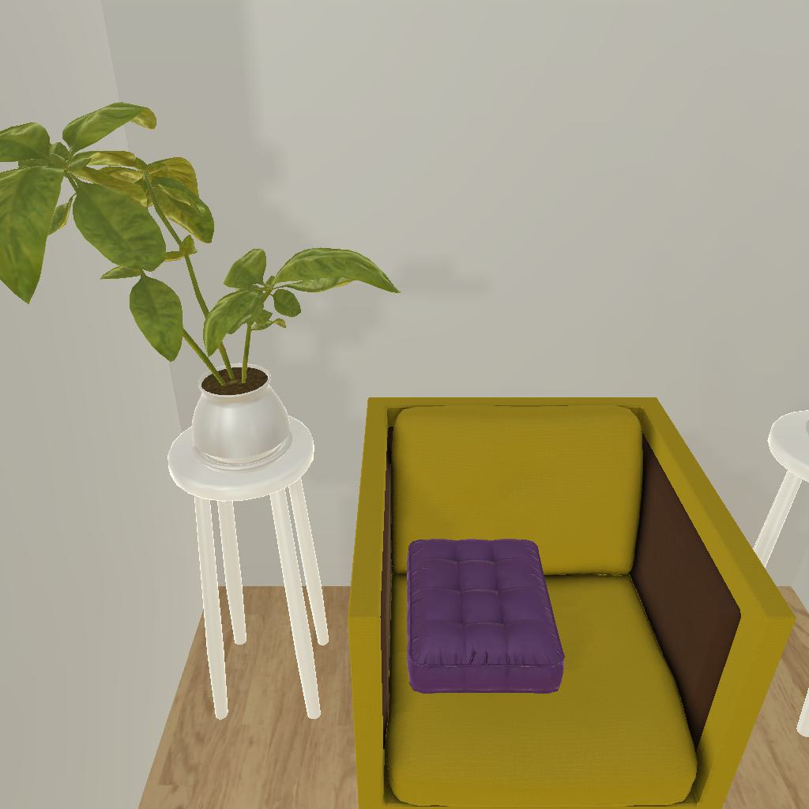

---------------------------------------------------------task: 4---------------------------------------------------------
--------------------------------------------------------------------------------------------------------------------------------------------------------------------
--------------------------------------------------------------------------------------------------------------------------------------------------------------------
Step:--------------------------------------------------------------------------1-------------------------------------------------------------------------------
----------------------------------------
VLM Prompt:
Image1:
Image2:
**Instruction**
1. Analyze the provided images to identify all visible household objects and compare the difference between images (e.h. whether the object is opened or not and taken on hand or not), focusing on those relevant to the task description "examine the statue with the floorlamp."
2. Use the analysis of images and the task hint "The agent must find an object of the desired type, locate and turn on a light source with the desired object in-hand." to answer the question: what is the most reasonable action in the choices for the task description "examine the statue with the floorlamp"?
3. Decide and write the answer using the template: The answer is: (i): , where i is the real number. If there is no desired object in images, search every place based on **Initial Observation** to find the object. And if no one is exactly correct, choose a similar answer.
**Initial Observation**
You are in the middle of a room. Looking quickly around you, you can see armchair (1), coffeetable (1-2), sidetable (1), garbagecan (1), drawer (1), sofa (1), diningtable (1)
**Answer Choices**
(1): go to coffeetable 1
(2): go to sidetable 1
(3): go to garbagecan 1
(4): go to drawer 1
(5): go to sofa 1
(6): go to coffeetable 2
(7): go to diningtable 1
(8): take houseplant 1 from armchair 1
(9): take pillow 1 from armchair 1
(10): take houseplant 2 from armchair 1
(11): examine armchair 1
**Answer**
Let's think step by step by following the instructions.
----------------------------------------
----------------------------------------
Original Response:
Image1 Analysis:
- There is a lamp on a sidetable, which seems to be off.
- There is an armchair with a green cushion and a pillow with a poo emoji.
- No statue is visible in this image.
Image2 Analysis:
- There is a houseplant on a white sidetable.
- There is an armchair with a green cushion and a purple pillow.
- No statue is visible in this image.
Comparison:
- Both images have an armchair with a green cushion, but the pillows are different colors.
- Both images have a sidetable, but with different objects on them (lamp and houseplant).
- No statue is visible in either image, and no objects are being taken or opened.
Task Hint Analysis:
- The task requires finding an object (statue) and examining it with the floorlamp turned on.
- The agent needs to locate and turn on a light source with the desired object (statue) in hand.
Based on the initial observation and the analysis of the images and task hint, the most reasonable action would be to first find the statue, which is not visible in the provided images. We must search every place based on the initial observation to find the object. The sidetable is the only place with a light source (lamp), but the statue is not there.
Since there is no direct indication of where the statue is, we will have to choose an action that involves searching for the statue. The coffeetable, sidetable, and drawer are common places where small objects like a statue might be placed. Since the statue is not visible on the sidetable or coffeetable in the images, it might be inside the drawer.
The answer is: (4): go to drawer 1.
----------------------------------------
----------------------------------------
>>> Refine Original VLM Response and Get Pure Action: go to drawer 1
----------------------------------------
-----------------------------------------------------------------
Running time: 14.528963804244995 seconds
Total Money: 1.5850399999999998
-----------------------------------------------------------------
-----------------------------------------------------------------
Text Observation:You arrive at loc 4. The drawer 1 is closed.
-----------------------------------------------------------------
UNSUCCEED